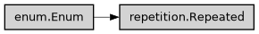

Repeated
- class ase2sprkkr.common.repetition.Repeated(*values)[source]
Describe how repeated configuration items are parsed and stored.
Class hierarchy

Constructor
- class Type(*values)[source]
Storage used for a repeated item.
- NO = None
- ARRAY = <class 'numpy.ndarray'>
- LIST = <class 'list'>
- DICT = <class 'dict'>
- class Numbering(*values)[source]
Numbering used by an item name.
- NO = 0
- YES = 1
- WITH_DEFAULT = 2
- property has_default
- property grammar_numbering
Numbering syntax accepted by the parser.
- property numbering_condition
Condition controlling output numbering, if there is one.
- static NUMBERED_IF(condition)[source]
Create a dense repeated value numbered when
condition(option)is true.
- property is_array
- property is_dict
- NO = Type.NO
- IGNORED = (Type.NO, <class 'ase2sprkkr.common.parsing_results.IgnoredKey'>)
- REPEATED = (Type.LIST, <class 'ase2sprkkr.common.parsing_results.RepeatedKey'>)
- ARRAY = (Type.ARRAY, <class 'ase2sprkkr.common.parsing_results.RepeatedKey'>)
- LIST_SECTION = (Type.LIST, <function Key.NONE>, Numbering.NO, False)
- DICT_SECTION = (Type.DICT, <function Key.NONE>, Numbering.NO, False)
- NUMBERED = (Type.ARRAY, <class 'ase2sprkkr.common.parsing_results.ArrayKey'>, Numbering.YES)
- DICT = (Type.DICT, <class 'ase2sprkkr.common.parsing_results.DictKey'>, Numbering.YES)
- DEFAULTDICT = (Type.DICT, <class 'ase2sprkkr.common.parsing_results.DefDictKey'>, Numbering.WITH_DEFAULT)